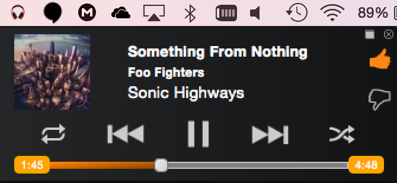

GDeskTunes
Desktop Player for Google Play Music™
This project is maintained by Gearlux
GDeskTunes - for Google Play Music™
Due to the recent updates of Google Play Music™, GDeskTunes does not work correctly.
Multi Platform Desktop Player for Google Play Music™ that integrates beatifully in your OS.
Features
- Multi Platform: Use the same player on your desktop, at home or at work. No need to switch to a desktop player with less functionality.
- Custom Styles: Use custom styles built into GDeskTunes to make it look beautiful, or stick with Google's original theme.
- Adjustable Appearance: Adjust the application bar of Google Play Music™ to navigate your music easily and switch fast between the different player modes.
- Media Keys: Control your music without having to switch applications. GDeskTunes responds to the media keys built in your computer, allowing you to easily control the playback of your music no matter what you're doing.
- Mini Player: Access the mini player from your tray icon to control your music. Drag the mini player to your desktop to have full control without interrupting you.
- Last.Fm Integration: Update your Now Playing status and scrobble tracks to Last.fm.
- Notifications: Get notifications whenever the currently playing song changes.
- Compact Layout: Switch to a compact layout so you can continue your work while viewing the song that is playing. You can adjust the layout with css to create your own mini player.
- Sidebar: Hide or show the sidebar to adjust the space where you can browse your music.
Custom Styles
Use custom styles built into GDeskTunes to make it look beautiful, or stick with Google's original theme.
Adjustable Appearance
Adjust the application bar of Google Play Music™ to navigate your music easily and switch fast between the different player modes.
Media Keys
Control your music without having to switch applications. GDeskTunes responds to the media keys built in your computer, allowing you to easily control the playback of your music no matter what you're doing.
Mini Player
Access the mini player from your tray icon to control your music. Drag the mini player to your desktop to have full control. Enlarge the mini player to enjoy the album art of the music that is playing.

Last.FM Integration
Update your Now Playing status and scrobble tracks to Last.fm. Love the songs you like on Last.fm.
Notifications
Get notifications whenever the currently playing song changes.
Customizable Compact Player
Switch to a compact layout so you can continue your work while viewing the song that is playing. You can adjust the layout with css to create your own mini player.
Sidebar
Hide or show the sidebar to adjust the space where you can browse your music.

Downloads
Checkout the Downloads page
Requirements
- Adobe Flash Player
- SSL implementation. Tested with OpenSSL
Credits
No affiliation with Google. Google Play is a trademark of Google Inc.
GDeskTunes is inspired by Radiant Player and Google Music Desktop Player